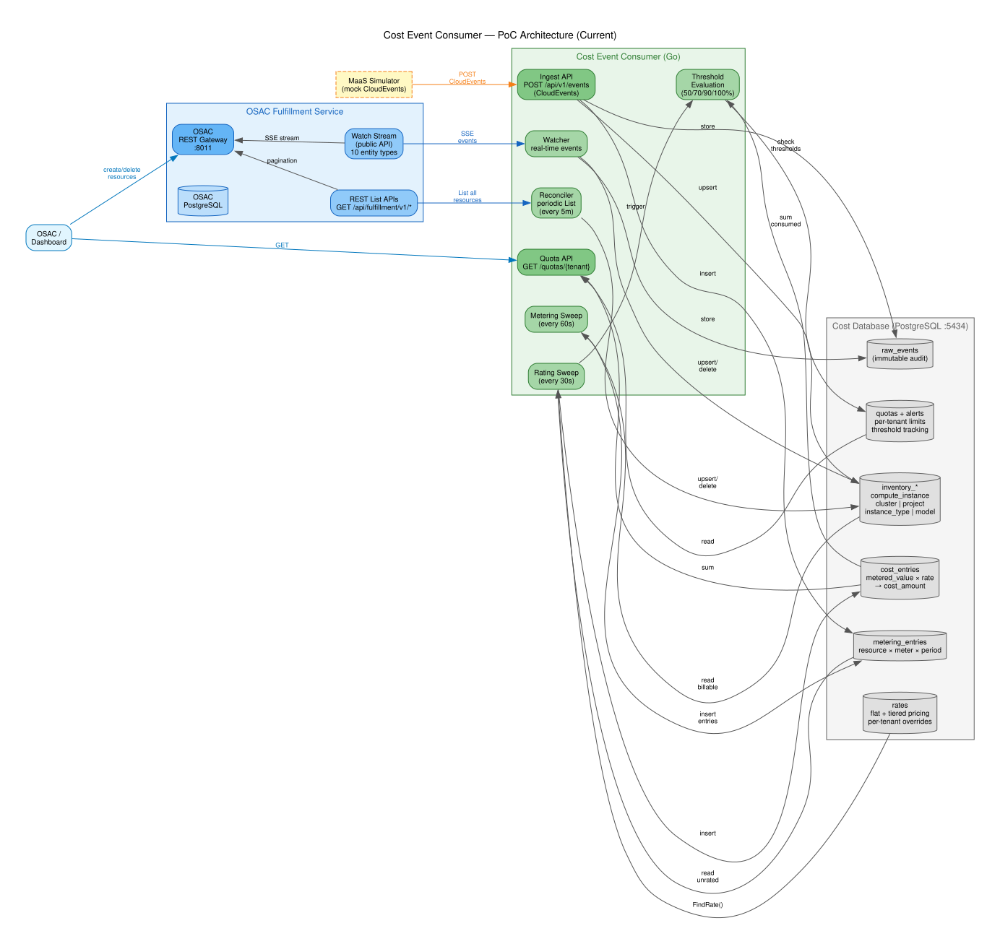
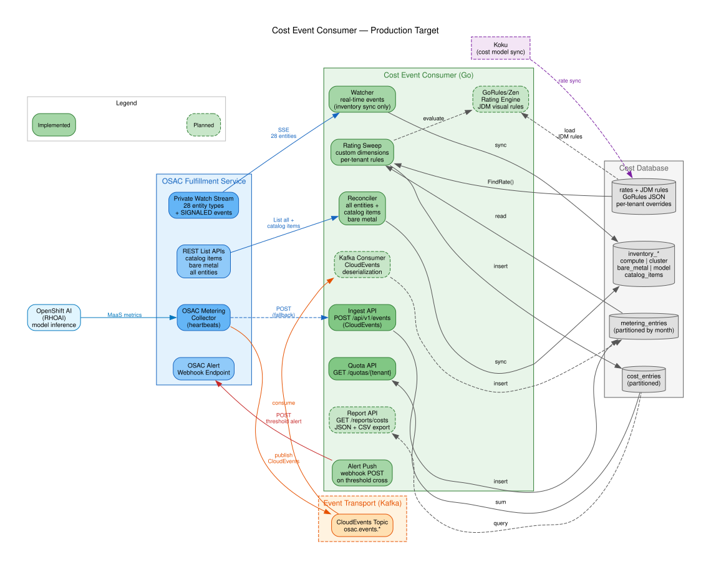
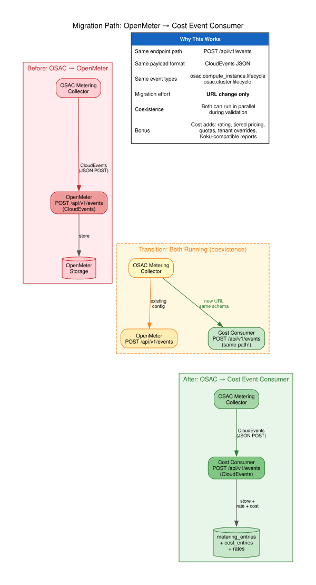

The rating pipeline turns metering entries into cost entries. It supports flat pricing, tiered pricing (with free tiers), per-tenant rate overrides, and Koku-compatible cost type classification.

Architecture overview for the OSAC cost management PoC — capacity-based and consumption-based cost tracking.
The cost-event-consumer runs as a standalone Go binary connecting to the OSAC fulfillment-service. It combines real-time Watch stream events with periodic REST List reconciliation (Watch+List pattern), a 60-second metering sweep, and a 30-second rating sweep.

| Component | Role | Interval |
|---|---|---|
| Watcher | Consumes OSAC Watch stream (SSE) for real-time inventory events | Continuous |
| Reconciler | Polls OSAC REST List APIs to catch missed events (drift correction) | Every 5 min |
| Metering Sweep | Calculates usage for all billable resources | Every 60s |
| Rating Sweep | Applies rates to unrated metering entries, produces cost entries | Every 30s |
| Ingest API | Accepts CloudEvents via HTTP POST (VM, Cluster, MaaS heartbeats) | On request |
| Quota API | Returns per-tenant quota/budget status with threshold checks | On request |
The production architecture evolves in three ways: the Watch stream switches to the private API (28 entity types including catalog items and bare metal), Kafka becomes available as a CloudEvents transport, and the OSAC metering collector replaces the local metering sweep as the primary data source.

| Area | PoC | Production |
|---|---|---|
| Watch stream | Public API (10 entities) | Private API (28 entities) |
| Event transport | SSE Watch + HTTP ingest | + Kafka consumer |
| Metering source | Local 60s sweep | OSAC collector (sweep as fallback) |
| Catalog items | Not synced | REST List polling for SKU→rate mapping |
| Bare metal | Not supported | Reconciler + Watch (same pattern as VMs) |
| Rating engine | SQL + Go (flat/tiered) | + GoRules/Zen for custom dimensions |
| Notifications | Pull only (quota API) | + Webhook push on threshold cross |
| Reports | SQL queries | REST API (JSON + CSV export) |
The OSAC metering collector currently sends CloudEvents to OpenMeter. Our ingest endpoint accepts the same CloudEvents format at the same path (POST /api/v1/events). Migration is a URL change — no schema changes needed. Both systems can run in parallel during validation.

The rating pipeline turns metering entries into cost entries. It supports flat pricing, tiered pricing (with free tiers), per-tenant rate overrides, and Koku-compatible cost type classification.
| Req | Priority | Title | Status | Notes |
|---|---|---|---|---|
| POC-ENV | CRITICAL | On-prem deployment | Not started | RHCM team scope |
| POC-ARCH | CRITICAL | Capacity-based charging | Done | |
| REQ-1 | CRITICAL | OSAC integration | Done | Watch + List reconciliation |
| REQ-1a | HIGH | Cluster lifecycle | Done | Verify "cluster orders" mapping |
| REQ-1b | CRITICAL | Heartbeat ingestion | Done | CloudEvents ingest + local sweep |
| REQ-2 | CRITICAL | Real-time cost calc | Done | <1ms/event, cost within 30s |
| REQ-2a | HIGH | MaaS CloudEvents | Done (mock) | Blocked on OSAC Model entity |
| REQ-3 | HIGH | Granular cost tracking | Partial | Data exists, no export API |
| REQ-3a | HIGH | Tenant/project attribution | Done | |
| REQ-3b | MEDIUM | Service catalog sync | Partial | Instance types synced, rates manual |
| REQ-4 | HIGH | Token metering (MaaS) | Done (mock) | |
| REQ-5 | MEDIUM | Chargeback reporting | Partial | SQL queries, no export endpoint |
| REQ-8 | HIGH | Bare metal costing | Blocked | BareMetalInstance not in public Watch |
| REQ-9 | HIGH | Quota/budget status | Done | |
| REQ-10 | HIGH | Threshold notifications | Done (pull) | Webhook push deferred |
| REQ-11 | MUST | Cost tiers | Done | Tiered pricing in rate engine |
| REQ-13 | HIGH | Custom rate dimensions | Not started | GoRules/Zen candidate (post-PoC) |
9 done • 4 partial • 3 not started
Balances freshness vs DB load. Matches the OSAC collector's emission interval. Sub-minute cost visibility.
SSE Watch stream + HTTP ingest is simpler and sufficient. Kafka adds operational complexity without PoC benefit. Easy to add later (~150 lines).
Local sweep is zero-coordination. Heartbeat emitter requires transport agreement with OSAC. Both produce identical metering entries. Sweep for PoC, emitter for production.
SQL-based rates with JSON tiers handle flat + tiered pricing. GoRules/Zen adds visual rule editor for custom dimensions (REQ-13). Incremental migration via Loader pattern.
Rate definitions carry Infrastructure/Supplementary classification and Koku metric name mapping. Enables eventual sync with Koku cost models.
All upstream sources (Watch, ingest, Kafka, sweep) write to the same table. All downstream consumers (rating, quotas, reports) read from it. Transport-agnostic by design.
Cost Management AI Grid PoC — Generated from docs/diagrams/*.dot